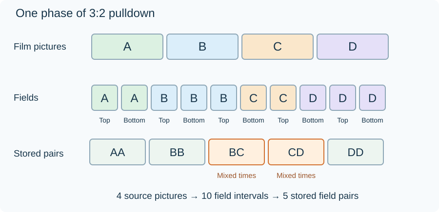

Telecine and 3:2 Pulldown
Telecine adapts film pictures to television timing. The familiar 3:2 pulldown cadence presents successive film pictures for alternating three-field and two-field intervals. Four source pictures occupy ten field intervals, fitting a 24-to-60 relationship.
For the common fractional-rate version, 24000/1001 film pictures per second become 60000/1001 field intervals per second. Those fields are often stored or reported as 30000/1001 frame pairs per second.

Original cadence schematic, starting at a two-field phase: A A B B B C C D D D. Top and bottom fields alternate. Adjacent pairs are AA, BB, BC, CD, and DD; a different starting phase shifts the pattern.
More fields, the same film motion
The repeated fields do not record new moments. They hold existing film pictures for different lengths of time. That uneven hold can create familiar film judder, especially during horizontal pans.
| Source within one cycle | Television representation |
|---|---|
| Four progressive film pictures | Ten field intervals |
| Equal source picture durations | Alternating two- and three-field holds |
| One picture time per film frame | Some stored pairs combine different picture times |
In hard telecine, the repetitions are represented in the stored pictures or fields. In soft telecine, signaling can instruct presentation to repeat fields without storing all those repetitions as separate coded pictures. The handling depends on the codec and transport.
For an Emby library of older film transfers or television recordings, a 29.97 fps interlaced description therefore does not necessarily mean the camera captured 59.94 distinct motion moments. The source may instead contain a recoverable 23.976 fps film sequence.
Inverse telecine tries to recover that sequence. It is useful when this cadence is present; applying it to native interlaced sport can remove real motion samples. Mixed programmes may contain both kinds of material.